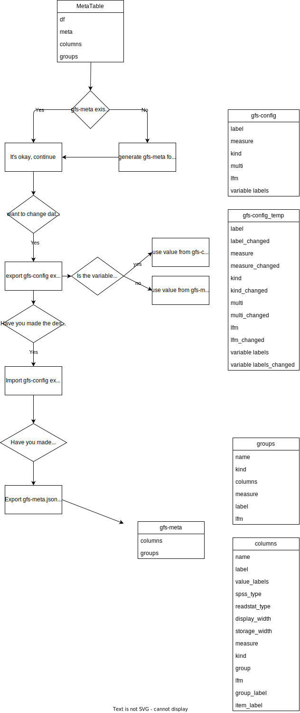

Package functions
gfs-functions
This repository is a part of the technology stack of gfs-zürich.
– Project Status: Ongoing
Project introduction
This repository is used for customer projects at gfs-zürich. It contains functions to create graphs and tables with python.
Project objectives
- streamline preprocessing of data files
- streamline table creation for data files
- streamline graphic creation for data files
- create presentations
Methods used
- Data Visualisation
- Data Processing
- …
Technologies
- Python
- Jupyter Notebooks
- SPSS Datafiles
- Excel
- JSON
- API
- Pandas
- …
Requirements
- Installed Python 3.10.6 on your local machine
- …
Getting-Started
- Clone this repository (for help see this tutorial).
- Install or update your Virtual Environment by following this section Pipenv virtual environment
- …
Virtual-Environment
Install Pipenv Package
In this project, we are using Pipenv for dependency management. Thus, you need the pipenv CLI tool installed on your computer:
- open cmd or powershell
- pip install pipenv
First install of Environment
As soon this package is installed, you can install all required packages for this project by executing the following command inside the root project folder:
- open cmd or powershell
- cd /your/local/github/repofolder/
- pipenv install
- restart VSCode
- choose the newly created gfs-functions virtual environment python interpreter (for help see this tutorial
Environment already installed (update dependencies)
If your environment exists and you only want to update the dependencies use these steps:
- open cmd or powershell
- cd /your/local/github/repofolder/
- pipenv sync
Add new Dependency
If you need another dependency, not yet defined in the Pipfile, you can install it using this command and it will also be added to the dependency list.
- open cmd or powershell
- cd /your/local/github/repofolder/
- pipenv install <package>
Featured Files
File & Folder Structure
| .gitignore # Git Ignore File
| LICENSE # License File
| Pipfile # Pip File for Dependencies
| README.md # Readme File for Repository
| setup.py #
| test.py #
| UML_gfs_repos.drawio # UML File
|
+---data # Data Folder
| EndFile_GVZ.sav
| fertig_R_GVZ.sav
| fertig_R_Omnibus_April.sav
| fertig_R_Omnibus_ZH.sav
| fertig_R_SAK.sav
| Grafiken_Vorlagen_mt.pptx
| grafiken_vorlage_alte_Methode.pptx
|
+---functions # folder for main functions
| | __init__.py # init py file
| |
| +---graphy # subfolder for graphics creation
| | create_barchart.py # file to create a bar chart
| | create_piechart.py # file to create a pie chart
| | create_stacked_barchart.py # file to create a stacked bar chart
| | create_wordcloud.py # file to create a wordcloud
| | main_data.py # file for data preparation
| | main_functions.py # file for common functions
| | main_graph.py # file for helper functions to create graphics
| | main_helper.py # file for helper functions
| | main_presentation.py # file for presentation creation
| | main_wrangling.py # file for data wrangling
| | __init__.py # init py file
| |
| +---metatables # subfolder for data preprocessing
| | main.py # file for data preprocessing
| | __init__.py # init py file
| |
| \---tools # subfolder for general tools
| perimeter_search.py # python script for perimeter search
| __init__.py # init py file
+---output # folder for outputs
|
+---ressources # folder for ressources
| \---maps # subfolder for map ressources
| \---Shapefiles # subfolder for shapefiles
| NUTS_RG_03M_2021_4326.cpg # cpg file for 03M EU Shapefile
| NUTS_RG_03M_2021_4326.dbf # dbf file for 03M EU Shapefile
| NUTS_RG_03M_2021_4326.prj # prj file for 03M EU Shapefile
| NUTS_RG_03M_2021_4326.shp # shp file for 03M EU Shapefile
| NUTS_RG_03M_2021_4326.shx # shx file for 03M EU Shapefile
| NUTS_RG_10M_2021_4326.cpg # cpg file for 10M EU Shapefile
| NUTS_RG_10M_2021_4326.dbf # dbf file for 10M EU Shapefile
| NUTS_RG_10M_2021_4326.prj # prj file for 10M EU Shapefile
| NUTS_RG_10M_2021_4326.shp # shp file for 10M EU Shapefile
| NUTS_RG_10M_2021_4326.shx # shx file for 10M EU Shapefile
| NUTS_RG_20M_2021_4326.cpg # cpg file for 20M EU Shapefile
| NUTS_RG_20M_2021_4326.dbf # dbf file for 20M EU Shapefile
| NUTS_RG_20M_2021_4326.prj # prj file for 20M EU Shapefile
| NUTS_RG_20M_2021_4326.shp # shp file for 20M EU Shapefile
| NUTS_RG_20M_2021_4326.shx # shx file for 20M EU Shapefile
|
+---templates # folder for templates
| arial.ttf # arial font
| color.json # json for color templates
| gfs-zh_logo.svg # vector image gfs logo
| graph.json #
| LeelawUI.ttf # LeelawUI font
| tahomabd.ttf # tahomabd font
| template_logo_left.pptx # Powerpoint presentation template
| template_logo_left_no_page_nr.pptx # Powerpoint presentation template
| template_logo_right.pptx # Powerpoint presentation template
| template_logo_right_no_page_nr.pptx # Powerpoint presentation template
| template_swissstaffing.pptx # Swissstaffing Powerpoint presentation template
| text.json #
|
\---test # folder for testing
test_barchart.ipynb # testing notebook for bar charts
test_metatables.ipynb # testing notebook for preprocessing
test_stacked_barchart.ipynb # testing notebook for stacked bar charts
test_syntax.ipynb #
Add documentation
The documentation will be added to the gfs-zurich.github.io repository. To get the documentation into the repository, clone it into the ./docs folder as functions. Then run the following command in the root folder of this repository to create the updated documentation:
pdoc --html --output-dir docs functions --config show_source_code=False -f
UML
Workflow für Metatable / Datapreprocessing

Sub-modules
functions.graphyfunctions.metatablesfunctions.tools-
gfs-tools These are tools for various tasks inside the technology stack of gfs-zürich.
Functions
def add_text_slide(info: dict, text: list[str], my_title: str = 'gfs-zürich, Markt- & Sozialforschung') ‑> Nonedef add_title_slide(info: dict) ‑> Nonedef create_barchart(info: dict, variables: list, breaks: list = None, legend_break: list = None, barchart_mean: bool = False, break_labels_rename: dict[str, str] = None, left_labels_rename: dict[str, str] = None, legend_labels_rename: dict[str, str] = None, left_labels_wrap: int = 50, left_labels_width: int = 999, show_mean: bool = False, title_custom_text: str = 'auto', subtitle_custom_text: str = 'auto', tag_custom_text: str = 'auto', legend_title_custom_text: str = 'auto', title_position: int = 1, subtitle_position: int = 2, tag_position: int = 3, legend_position: str = 'right', return_data: bool = False, color_theme: str = 'auto', color_type: str = 'groups', color_direction: str = 'forward', color_custom: list[str] = None, value_labels_show_min: float = 0, value_labels_add_after: list[list[str]] = None, weight: str = 'auto', order_by: dict = None, title_remove_before: str = '', title_remove_after: str = '', tag_add_before: str = '', subtitle_add_before: str = '', left_labels_remove_before: str = '', left_labels_remove_after: str = '', bar_gap=999, bar_width: float = 999, bar_min_size: float = 0, break_distance: float = 999, label_size: float = 16, value_labels_size: float = 999, legend_labels_size: float = 14, show_legend: bool = True, show_total: bool = True, show_count: bool = False, show_all_bars: bool = False, show_legend_title: Optional[bool] = None, select_variable_levels: list[int] = None, select_min_count: int = 0, special_variables: list[int] = [96, 97, 98, 99999996, 99999997, 99999998], standard_arguments: dict = None, save_figure: bool = True, df: pandas.core.frame.DataFrame = 'auto', meta: pyreadstat._readstat_parser.metadata_container = 'auto') ‑> Optional[tuple]-
Creates a barchart
Args
info:dict- A dictionary with info about the presentation. Has info like number of slides, presentation name and the presentation object itself ~ usually info
variables:list- A list of variables. If multiple are added, function doesn't accept any breaks. ~ ['AW2'] / ['AW1_1', 'AW1_2', …]
breaks:list, optional- A list of breaks. ~ ['alter_break', 'sex_break']. Defaults to None.
legend_break:list, optional- A list of breaks. This is used to create the legend break if either "mean" == True or "select_variable_levels" has exactly one item ~ ['alter_break'] / [['alter_break']]. Defaults to None.
barchart_mean:bool, optional- Toggles barchart type mean, where mean value of variable is shown. Defaults to False.
break_labels_rename:dict[str, str], optional- Renames the breaks. ~ {'old_name': 'new_name'}. Defaults to None.
left_labels_rename:dict[str, str], optional- Renames the labels of the different break levels. ~ {'old_name', 'new_name'}. Defaults to None.
legend_labels_rename:dict[str, str], optional- Renames the labels of the different legend levels. ~ {'old_name', 'new_name'}. Defaults to None.
left_labels_wrap:int, optional- Wraps the variable labels. Defaults to 50.
left_labels_width:int, optional- Changes the space allocated to the y-label. Defaults to 999 (which means automatic).
show_mean:bool, optional- Turns uses the mean of the variable as x-value and changes scale type from percentage to mean. ~ True. Defaults to False.
title_custom_text:str, optional- Creates custom title text, if automatic text isn't desired.Defaults to 'auto'.
subtitle_custom_text:str, optional- Creates custom subtitle text, if automatic text isn't desired. Defaults to 'auto'.
tag_custom_text:str, optional- Creates custom tag text, if automatic text isn't desired. Defaults to 'auto'.
legend_title_custom_text:str, optional- Creates a custom legend title, if title is desired. Defaults to 'auto'.
title_position:int, optional- Sets the position of the title text. ~ 0 = don't show, 1, 2, 3 are possible positions on plot. Defaults to 1.
subtitle_position:int, optional- Sets the position of the subtitle text. ~ 0 = don't show, 1, 2, 3 are possible positions on plot. Defaults to 2.
tag_position:int, optional- Sets the position of the tag text. ~ 0 = don't show, 1, 2, 3 are possible positions on plot. Defaults to 3.
legend_position:str, optional- Sets the position of the legend. ~ 'bottom'. Defaults to 'right'.
return_data:bool, optional- Returns the data frame, that is used to construct the graph, so it can be viewed. The data frame will be printed out if the parameter is True. This doesn't affect the graph in any way. Defaults to False.
color_theme:str, optional- Sets color theme for graph. ~ 'test', 'gfs'. Defaults to 'auto'.
color_type:str, optional- Sets color value type. ~ 'diverging', 'single_hue'. Defaults to 'groups'.
color_direction:str, optional- Sets direction of color pattern. ~ 'backward'. Defaults to 'forward'.
color_custom:list[str], optional- Uses custom colors ~ ['#131366', '#454578']. Defaults to None.
value_labels_show_min:float, optional- Sets threshold showing labels by %. Use 0 to show all labels and 100 to show none. Use numbers between for a mix. Defaults to 0.
value_labels_add_after:list[list[str]], optional- Adds text after the value labels ~ [['text', 'text'], ['text', 'text']]. Defaults to None.
weight:str, optional- Turns weight on if weight variable name is added. ~ "gewicht". Defaults to 'auto'.
order_by:dict, optional- A dictionary. Orders the plot by any variable in the x data frame. ~ {'mean': 'asc'} / {1: 'desc'}. Defaults to None.
title_remove_before:str, optional- Removes the label text before the given string. ~ "? " deletes everything up until and including the question mark. Defaults to ''.
title_remove_after:str, optional- Removes the label text after the given string. ~ ". Bitte" deletes everything after and including the punctuation mark that. Defaults to ''.
tag_add_before:str, optional- Adds text before the tag text. ~ "Meine Zusatzinfo, ', " adds this string before tag. Defaults to ''.
subtitle_add_before:str, optional- Adds text before the tag text. ~ "Filter: F3 = 'Ja', " adds this string before tag. Defaults to ''.
left_labels_remove_before:str, optional- Removes the label text before the given string. ~ "? " deletes everything up until and including the question mark. Defaults to ''.
left_labels_remove_after:str, optional- Removes the label text after the given string. ~ ". Bitte" deletes everything after and including the punctuation mark. Defaults to ''.
bar_gap:int, optional- Sets the gap between the bars within a group. Defaults to 0.15.
bar_width:float, optional- Sets the width of the bars. Defaults to 0.7.
bar_min_size:float, optional- Sets the minimum size of the show bars. Only affects plot if
show_all_barsis set to "False". Defaults to 0. break_distance:float, optional- Sets the distance between the breaks. Defaults to 0.5
label_size:float, optional- Sets the size of labels. Defaults to 16.
value_labels_size:float, optional- Sets the size of value labels. Defaults to 999.
legend_labels_size:float, optional- Sets the size of legend. Defaults to 14.
show_legend:bool, optional- Turns legend on and off. ~ False. Defaults to True.
show_total:bool, optional- Turns total bar on and off. ~ False. Defaults to True.
show_count:bool, optional- Turns counts in variable labels on and off. ~ True. Defaults to False.
show_all_bars:bool, optional- Turns counts bars with zero observations on and off. ~ True. Defaults to False.
show_legend_title:bool, optional- Toggles legend title. ~ True / False. Defaults to None, which means automatic.
select_variable_levels:list[int], optional- A list variable levels used to select and order variables. ~ [2, 1, 99999997]. Defaults to None.
select_min_count:int, optional- Selects all bars with higher count than given. ~ 10 means that only bars with more than 10 observations will be selected. Defaults to 0.
special_variables:list[int], optional- A list variable levels that will be treated differently. They will appear gray in the graph and have not effect on the mean calculation. ~ [16, 99999997]. Defaults to [96, 97, 98, 99999996, 99999997, 99999998].
standard_arguments:dict, optional- Adds some standard arguments that normally don't need to be changed. Defaults to None.
save_figure:dict, optional- Turns figure export on and off. Defaults to True.
df:pd.DataFrame, optional- The current data file ~ usually df. Defaults to 'auto'.
meta:pyreadstat._readstat_parser.metadata_container, optional- The current meta data file ~ usually meta. Defaults to 'auto'.
Returns
Optional[tuple]- returns df and meta objects if return_data is True
def create_piechart(info: dict, variables: list, breaks: list = None, break_labels_rename: dict[str, str] = None, legend_labels_rename: dict[str, str] = None, title_custom_text: str = 'auto', subtitle_custom_text: str = 'auto', tag_custom_text: str = 'auto', title_position: int = 1, subtitle_position: int = 2, tag_position: int = 3, return_data: bool = False, color_theme: str = 'auto', color_type: str = 'groups', color_direction: str = 'forward', color_custom: list[str] = None, value_labels_color: int = 999, value_labels_show_min: float = 0.8, weight: str = 'auto', order_by: dict = None, title_remove_before: str = '', title_remove_after: str = '', tag_add_before: str = '', subtitle_add_before: str = '', value_labels_size: float = 16, legend_labels_size: float = 12, hole_size: float = 0, show_legend: bool = True, show_count: bool = False, select_variable_levels: list[int] = None, special_variables: list[int] = [96, 97, 98, 99999996, 99999997, 99999998], standard_arguments: dict = None, save_figure: bool = True, df: pandas.core.frame.DataFrame = 'auto', meta: pyreadstat._readstat_parser.metadata_container = 'auto')def create_stacked_barchart(info: dict, variables: list, breaks: list = None, break_labels_rename: dict[str, str] = None, left_labels_rename: dict[str, str] = None, legend_labels_rename: dict[str, str] = None, left_labels_wrap: int = 50, left_labels_width: int = 999, show_mean: bool = False, title_custom_text: str = 'auto', subtitle_custom_text: str = 'auto', tag_custom_text: str = 'auto', title_position: int = 1, subtitle_position: int = 2, tag_position: int = 3, return_data: bool = False, color_theme: str = 'auto', color_type: str = 'diverging', color_direction: str = 'forward', color_custom: list[str] = None, value_labels_color: int = 999, value_labels_show_min: float = 0.8, weight: str = 'auto', order_by: dict = None, title_remove_before: str = '', title_remove_after: str = '', tag_add_before: str = '', subtitle_add_before: str = '', left_labels_remove_before: str = '', left_labels_remove_after: str = '', bar_width: float = 999, break_distance: float = 999, label_size: float = 16, value_labels_size: float = 16, legend_labels_size: float = 14, show_legend: bool = True, show_total: bool = True, show_count: bool = False, mean_name: str = 'MW', mean_transform: function = <function <lambda>>, mean_custom: list[str] = None, select_variable_levels: list[int] = None, select_variables: list[int] = None, select_min_count: int = 0, special_variables: list[int] = [96, 97, 98, 99999996, 99999997, 99999998], standard_arguments: dict = None, save_figure: bool = True, df: pandas.core.frame.DataFrame = 'auto', meta: pyreadstat._readstat_parser.metadata_container = 'auto')-
Creates a stacked barchart
:param info: A dictionary with info about the presentation. Has info like number of slides, presentation name and the presentation object itself ~ usually info :type info: dict
:param df: The current data file ~ usually df :type df: pd.DataFrame
:param meta: The current meta data file ~ usually meta :type meta: pyreadstat._readstat_parser.metadata_container
:param variables: A list of variables. If multiple are added, function doesn't accept any breaks. ~ ['AW2'] / ['AW1_1', 'AW1_2', …] :type variables: list[str]
:param breaks: A list of breaks. ~ ['alter_break', 'sex_break'], defaults to [] :type breaks: list[str], optional
:param break_labels_rename: Renames the breaks. ~ {'old_name': 'new_name'}, defaults to {} :type break_labels_rename: dict[str, str], optional
:param left_labels_rename: Renames the labels of the different break levels. ~ {'old_name', 'new_name'}, defaults to {} :type left_labels_rename: dict[str, str], optional
:param legend_labels_rename: Renames the labels of the variable in legend. ~ {'old_name', 'new_name'}, defaults to {} :type legend_labels_rename: dict[str, str], optional
:param left_labels_wrap: Wraps the variable labels, defaults to 50 :type left_labels_wrap: int, optional
:param left_labels_width: Changes the space allocated to the y-label, defaults to 999 (which means automatic) :type left_labels_width: int, optional
:param show_mean: Turns the mean annotations on. ~ True, defaults to False :type show_mean: bool, optional
:param title_custom_text: Creates custom title text, if automatic text isn't desired, defaults to "auto" :type title_custom_text: str, optional
:param subtitle_custom_text: Creates custom subtitle text, if automatic text isn't desired, defaults to "auto" :type subtitle_custom_text: str, optional
:param tag_custom_text: Creates custom tag text, if automatic text isn't desired, defaults to "auto" :type tag_custom_text: str, optional
:param title_position: Sets the position of the title text. ~ 0 = don't show, 1, 2, 3 are possible positions on plot, defaults to 1 :type title_position: int, optional
:param subtitle_position: Sets the position of the subtitle text. ~ 0 = don't show, 1, 2, 3 are possible positions on plot, defaults to 2 :type subtitle_position: int, optional
:param tag_position: Sets the position of the tag text. ~ 0 = don't show, 1, 2, 3 are possible positions on plot, defaults to 3 :type tag_position: int, optional
:param return_data: Returns the data frame, that is used to construct the graph, so it can be viewed. The data frame will be printed out if the parameter is True. This doesn't affect the graph in any way. defaults to False :type return_data: bool, optional
:param color_theme: Sets color theme for graph. ~ 'test', 'gfs', defaults to 'standard' :type color_theme: str, optional
:param color_type: Sets color value type. ~ 'groups', 'single_hue', defaults to 'diverging' :type color_type: str, optional
:param color_direction: Sets direction of color pattern. ~ 'backward', defaults to 'forward' :type color_direction: str, optional
:param value_labels_color: Sets threshold for black or white label color. Use 0 for all black labels and 255 for all white. Use numbers between for a mix, defaults to 130 :type value_labels_color: int, optional
:param value_labels_show_min: Sets threshold showing labels by %. Use 0 to show all labels and 100 to show none. Use numbers between for a mix, defaults to 0.8 :type value_labels_show_min: float, optional
:param weight: Turns weight on if weight variable name is added. ~ "gewicht", defaults to '' :type weight: str, optional
:param order_by: A dictionary. Orders the plot by any variable in the x data frame. ~ {'mean': 'asc'} / {1: 'desc'}, defaults to {} :type order_by: dict, optional
:param title_remove_before: Removes the label text before the given string. ~ "? " deletes everything up until and including the question mark, defaults to '' :type title_remove_before: str, optional
:param title_remove_after: Removes the label text after the given string. ~ ". Bitte" deletes everything after and including the punctuation mark that, defaults to '' :type title_remove_after: str, optional
:param tag_add_before: Adds text before the tag text. ~ "Meine Zusatzinfo, ', " adds this string before tag, defaults to '' :type tag_add_before: str, optional
:param subtitle_add_before: Adds text before the tag text. ~ "Filter: F3 = 'Ja', " adds this string before tag, defaults to '' :type subtitle_add_before: str, optional
:param left_labels_remove_before: Removes the label text before the given string. ~ "? " deletes everything up until and including the question mark, defaults to '' :type left_labels_remove_before: str, optional
:param left_labels_remove_after: Removes the label text after the given string. ~ ". Bitte" deletes everything after and including the punctuation mark that, defaults to '' :type left_labels_remove_after: str, optional
:param bar_width: Sets the width of the bars, defaults to 0.8 :type bar_width: float, optional
:param break_distance: Sets the distance between the breaks, defaults to 0.5 :type break_distance: float, optional
:param label_size: Sets the size of labels, defaults to 16 :type label_size: float, optional
:param value_labels_size: Sets the size of value labels, defaults to 16 :type value_labels_size: float, optional
:param legend_labels_size: Sets the size of legend, defaults to 12 :type legend_labels_size: float, optional
:param show_legend: Turns legend on and off. ~ False, defaults to True :type show_legend: bool, optional
:param show_total: Turns total bar on and off. ~ False, defaults to True :type show_total: bool, optional
:param show_count: Turns counts in variable labels on and off. ~ True, defaults to False :type show_count: bool, optional
:param mean_name: Changes name written above the mean values, defaults to 'MW' :type mean_name: str, optional
:param mean_transform: Changes the size of the mean values with a transformation. lambda n: -n + 2 changes n to the negative value of n and adds 2, defaults to lambda n: n :type mean_transform: LambdaType, optional
:param select_variable_levels: A list variable levels used to select and order variables. ~ [2, 1, 99999997], defaults to [] :type select_variable_levels: list[int], optional
:param special_variables: A list variable levels that will be treated differently. They will appear gray in the graph and have not effect on the mean calculation. ~ [16, 99999997], defaults to [96, 97, 98, 99999996, 99999997, 99999998] :type special_variables: list[int], optional
:param standard_arguments: Adds some standard arguments that normally don't need to be changed, defaults to None :type standard_arguments: dict, optional
:param save_figure: Turns figure export on and off. ~ False, defaults to True :type save_figure: bool, optional
:return: If return_data is on it returns the plot data, so it can be viewed. :rtype: type
def create_wordcloud(info: dict, variables: list[str], language_column: str, translate_to: int = 564, transform: str = 'no', font_name: str = 'arial', title_custom_text: str = 'auto', subtitle_custom_text: str = 'auto', tag_custom_text: str = 'auto', title_position: int = 1, subtitle_position: int = 2, tag_position: int = 3, return_data: bool = False, color_theme: str = 'auto', color_custom: str = 'auto', weight: str = 'auto', title_remove_before: str = '', title_remove_after: str = '', tag_add_before: str = '', subtitle_add_before: str = '', label_size: float = 16, value_labels_size: float = 999, show_count: bool = False, remove_words: Optional[list[str]] = None, min_font_size: int = 0, min_count: int = 1, max_words: int = 200, standard_arguments: dict = None, save_figure: bool = True, df: pandas.core.frame.DataFrame = 'auto', meta: pyreadstat._readstat_parser.metadata_container = 'auto') ‑> Optional[tuple]-
Creates a barchart
Args
info:dict- A dictionary with info about the presentation. Has info like number of slides, presentation name and the presentation object itself ~ usually info
variables:list- A list of variables. If multiple are added, function doesn't accept any breaks. ~ ['AW2'] / ['AW1_1', 'AW1_2', …]
breaks:list, optional- A list of breaks. ~ ['alter_break', 'sex_break']. Defaults to None.
legend_break:list, optional- A list of breaks. This is used to create the legend break if either "mean" == True or "select_variable_levels" has exactly one item ~ ['alter_break'] / [['alter_break']]. Defaults to None.
barchart_mean:bool, optional- Toggles barchart type mean, where mean value of variable is shown. Defaults to False.
break_labels_rename:dict[str, str], optional- Renames the breaks. ~ {'old_name': 'new_name'}. Defaults to None.
left_labels_rename:dict[str, str], optional- Renames the labels of the different break levels. ~ {'old_name', 'new_name'}. Defaults to None.
legend_labels_rename:dict[str, str], optional- Renames the labels of the different legend levels. ~ {'old_name', 'new_name'}. Defaults to None.
left_labels_wrap:int, optional- Wraps the variable labels. Defaults to 50.
left_labels_width:int, optional- Changes the space allocated to the y-label. Defaults to 999 (which means automatic).
show_mean:bool, optional- Turns uses the mean of the variable as x-value and changes scale type from percentage to mean. ~ True. Defaults to False.
title_custom_text:str, optional- Creates custom title text, if automatic text isn't desired.Defaults to 'auto'.
subtitle_custom_text:str, optional- Creates custom subtitle text, if automatic text isn't desired. Defaults to 'auto'.
tag_custom_text:str, optional- Creates custom tag text, if automatic text isn't desired. Defaults to 'auto'.
legend_title_custom_text:str, optional- Creates a custom legend title, if title is desired. Defaults to 'auto'.
title_position:int, optional- Sets the position of the title text. ~ 0 = don't show, 1, 2, 3 are possible positions on plot. Defaults to 1.
subtitle_position:int, optional- Sets the position of the subtitle text. ~ 0 = don't show, 1, 2, 3 are possible positions on plot. Defaults to 2.
tag_position:int, optional- Sets the position of the tag text. ~ 0 = don't show, 1, 2, 3 are possible positions on plot. Defaults to 3.
legend_position:str, optional- Sets the position of the legend. ~ 'bottom'. Defaults to 'right'.
return_data:bool, optional- Returns the data frame, that is used to construct the graph, so it can be viewed. The data frame will be printed out if the parameter is True. This doesn't affect the graph in any way. Defaults to False.
color_theme:str, optional- Sets color theme for graph. ~ 'test', 'gfs'. Defaults to 'auto'.
color_type:str, optional- Sets color value type. ~ 'diverging', 'single_hue'. Defaults to 'groups'.
color_direction:str, optional- Sets direction of color pattern. ~ 'backward'. Defaults to 'forward'.
color_custom:list[str], optional- Uses custom colors ~ ['#131366', '#454578']. Defaults to None.
value_labels_show_min:float, optional- Sets threshold showing labels by %. Use 0 to show all labels and 100 to show none. Use numbers between for a mix. Defaults to 0.
value_labels_add_after:list[list[str]], optional- Adds text after the value labels ~ [['text', 'text'], ['text', 'text']]. Defaults to None.
weight:str, optional- Turns weight on if weight variable name is added. ~ "gewicht". Defaults to 'auto'.
order_by:dict, optional- A dictionary. Orders the plot by any variable in the x data frame. ~ {'mean': 'asc'} / {1: 'desc'}. Defaults to None.
title_remove_before:str, optional- Removes the label text before the given string. ~ "? " deletes everything up until and including the question mark. Defaults to ''.
title_remove_after:str, optional- Removes the label text after the given string. ~ ". Bitte" deletes everything after and including the punctuation mark that. Defaults to ''.
tag_add_before:str, optional- Adds text before the tag text. ~ "Meine Zusatzinfo, ', " adds this string before tag. Defaults to ''.
subtitle_add_before:str, optional- Adds text before the tag text. ~ "Filter: F3 = 'Ja', " adds this string before tag. Defaults to ''.
left_labels_remove_before:str, optional- Removes the label text before the given string. ~ "? " deletes everything up until and including the question mark. Defaults to ''.
left_labels_remove_after:str, optional- Removes the label text after the given string. ~ ". Bitte" deletes everything after and including the punctuation mark. Defaults to ''.
bar_gap:int, optional- Sets the gap between the bars within a group. Defaults to 0.15.
bar_width:float, optional- Sets the width of the bars. Defaults to 0.7.
bar_min_size:float, optional- Sets the minimum size of the show bars. Only affects plot if
show_all_barsis set to "False". Defaults to 0. break_distance:float, optional- Sets the distance between the breaks. Defaults to 0.5
label_size:float, optional- Sets the size of labels. Defaults to 16.
value_labels_size:float, optional- Sets the size of value labels. Defaults to 999.
legend_labels_size:float, optional- Sets the size of legend. Defaults to 14.
show_legend:bool, optional- Turns legend on and off. ~ False. Defaults to True.
show_total:bool, optional- Turns total bar on and off. ~ False. Defaults to True.
show_count:bool, optional- Turns counts in variable labels on and off. ~ True. Defaults to False.
show_all_bars:bool, optional- Turns counts bars with zero observations on and off. ~ True. Defaults to False.
show_legend_title:bool, optional- Toggles legend title. ~ True / False. Defaults to None, which means automatic.
select_variable_levels:list[int], optional- A list variable levels used to select and order variables. ~ [2, 1, 99999997]. Defaults to None.
select_min_count:int, optional- Selects all bars with higher count than given. ~ 10 means that only bars with more than 10 observations will be selected. Defaults to 0.
special_variables:list[int], optional- A list variable levels that will be treated differently. They will appear gray in the graph and have not effect on the mean calculation. ~ [16, 99999997]. Defaults to [96, 97, 98, 99999996, 99999997, 99999998].
standard_arguments:dict, optional- Adds some standard arguments that normally don't need to be changed. Defaults to None.
save_figure:dict, optional- Turns figure export on and off. Defaults to True.
df:pd.DataFrame, optional- The current data file ~ usually df. Defaults to 'auto'.
meta:pyreadstat._readstat_parser.metadata_container, optional- The current meta data file ~ usually meta. Defaults to 'auto'.
Returns
Optional[tuple]- returns df and meta objects if return_data is True
def get_answer_list(df, column)def get_word_frequencies(german_answers: list[str], transform: str, remove_words: Optional[list[str]] = None, min_count: int = 1) ‑> dictdef print_word_frequencies(df, column, min_count)def save_presentation(info: dict) ‑> Nonedef show_stats(meta, variable)def show_summary(meta, columns: list = [])def start_presentation(name: str, df: pandas.core.frame.DataFrame, meta: pyreadstat._readstat_parser.metadata_container, output_path: str = './output/', template_path: str = './templates/', template_custom: str = 'auto', color_theme: str = 'standard', language: str = 'de', value_labels_color: int = 130, weight: str = '', bar_width_barchart: float = 0.7, bar_width_stacked_barchart: float = 0.8, bar_gap_barchart: float = 0.15, break_distance: float = 0.5, count_name: str = 'N', logo_side: str = 'right', export_svg: bool = False, standard_arguments: dict = None, show_page_number: bool = False) ‑> dict-
Creates a new presentation
:param name: Changes the name of the presentation :type name: str
:param df: The current data file ~ usually df :type df: pd.DataFrame
:param meta: The current meta data file ~ usually meta :type meta: pyreadstat._readstat_parser.metadata_container
:param output_path: Changes path and name of the output files, defaults to "../output/" :type output_path: str, optional
:param template_path: Sets path of pptx-template file, defaults to '../templates/' :type template_path: str, optional
:param template_custom: Choose a custom template, defaults to 'auto' :type template_custom: str, optional
:param color_theme: Sets color theme for graph. ~ 'test', 'gfs', defaults to 'standard' :type color_theme: str, optional
:param language: Sets language for texts like subtitle and tag. ~ 'fr', 'en', 'it', defaults to 'de' :type language: str, optional
:param value_labels_color: Sets threshold for black or white label color. Use 0 for all black labels and 255 for all white. Use numbers between for a mix, defaults to 130 :type value_labels_color: int, optional
:param weight: Turns weight on if weight variable name is added. ~ "gewicht", defaults to '' :type weight: str, optional
:param bar_width_barchart: Sets the width of the barchart bars, defaults to 0.7 :type bar_width_barchart: float, optional
:param bar_width_stacked_barchart: Sets the width of the stacked barchart bars, defaults to 0.8 :type bar_width_stacked_barchart: float, optional
:param bar_gap_barchart: Sets the gap between the bars within a group, defaults to 0.15 :type bar_gap_barchart: float, optional
:param break_distance: Sets the distance between the breaks, defaults to 0.5 :type break_distance: float, optional
:param count_name: Changes the name of the count. ~ if "K" is passed in, counts look like "K = 42", defaults to 'N' :type count_name: str, optional
:param logo_side: Changes the position of the logo on the presentation slides, ~ 'left', defaults to 'right' :type logo_side: str, optional
:param export_svg: Exports graphs as .svg files if True, defaults to False :type export_svg: bool, optional
:param standard_arguments: Adds some standard arguments that normally don't need to be changed, defaults to {} :type standard_arguments: dict, optional
:param show_page_number: Turns page number on PowerPoint on and off ~ True, defaults to False :type show_page_number: bool, optional
:return: Returns a dictionary with presentation info, the presentation object and some info about the plot theme. :rtype: dict
def translate_column(info, open_question_column, language_column, translate_to, df)
Classes
class MetaTable (df: pandas.core.frame.DataFrame, meta: pyreadstat._readstat_parser.metadata_container, project_name: str, year: str = '2023')-
creates MetaTable object that makes data wrangling of files read with pyreadstat easy
Args
df:pd.DataFrame- DataFrame read with pyreadstat
meta:pyreadstat._readstat_parser.metadata_container- pyreadstat metadata
project_name:str- The name of the project. Is used as a folder name for the generated files
gfs_meta:dict- gfs specific meta data that is used in other gfs products
Methods
def create_column_copy(self, new_column: str, column: str, copy_values: bool)-
Creates a new column that's a copy of another column in the MetaTable
Args
new_column:str- Name of the new column
column:str- Name of the column to be copied
copy_values:bool- If True it copies the dataframe values, if False, the column will be full of np.NaN
def create_empty_columns(self, columns: list[str], label: str, variable_labels: dict[int, str])def export_config(self)-
Exports an excel-file that makes changing the meta data very simple.
def import_config(self)-
Imports the excel-file with the changed meta data and changes the MetaTable accordingly.
def recode(self, columns: Union[list[str], dict[str, str]], values: dict[int, typing.Any], keep_untouched_codes=True)-
recodes chosen columns
Args
columns:Union[list[str], dict[str, str]]- can either be a list of the columns that should get new codes list ['F5_01', 'F5_02'] or a dictionary with columns that should be kept unchanged as keys and new columns as values like {'F5_01': 'F5_01_rec', 'F5_02': 'F5_02_rec'}
values:dict[int, Any]- a dictionary with new variable labels as keys and variable labels that should be recoded as values like {1: [1, 2], 2: range(3, 6), 3: 6}. This means that the old codes 1 and 2 become the new code 1, the codes 3, 4 and 5 become the new code 2, and the code 6 becomes the new code 3.
keep_untouched_codes:bool, optional- For example: When a code 7 exists, but is not changed with the "values" argument, it is kept as it was if True. If False, all answers with code 7 will set to Null and the label for the code 7 will be deleted. Defaults to True.
def rename_columns(self, columns: dict[str, str])-
Renames the given columns.
Args
columns:dict[str, str]- Columns to rename: {'old_name': 'new_name'}
def return_components(self) ‑> tuple[pandas.core.frame.DataFrame, pyreadstat._readstat_parser.metadata_container, dict]-
Returns the updated DataFrame, the metadata that are contained within the object and the gfs metadata
Returns
tuple[pd.DataFrame, pyreadstat._readstat_parser.metadata_container, dict]- returns tuple with objects
def scale_level(self, columns: list[str], new_scale: str)-
Changes the scale levels of the given columns.
Args
columns:list[str]- A list of columns
new_scale:str- The new scale of the given columns. Can be 'nominal', 'scale' or 'ordinal'
def select_columns(self, columns: list)-
selects the given columns and removes all others.
Args
columns:list- Columns to select
def show(self, columns: Union[list[str], str] = 'last changed', only_label: bool = False, show_objects: bool = False, total: bool = False)-
Shows info about the value labels and variable label of the given columns.
Args
columns:Union[list[str], str]- Columns to be shown. If no column is passed in the last changed columns will be used. columns can either be a list of column names or a single column name as a string.
only_label:bool- Only shows the variable label
show_objects:bool- Also shows the python objects (makes copying easier)
total:bool- makes some changes to output for the show_all function. Not useful to the enduser.
def show_all(self, columns: Union[list[str], str] = 'last changed')-
Shows info about the value labels and the meta data of the given columns.
Args
columns:Union[list[str], str]- Columns to be shown. If no column is passed in the last changed columns will be used. columns can either be a list of column names or a single column name as a string.
def show_meta(self, columns: Union[list[str], str] = 'last changed', total: bool = False)-
Shows info about the meta data of the given columns.
Args
columns:Union[list[str], str]- Columns to be shown. If no column is passed in the last changed columns will be used. columns can either be a list of column names or a single column name as a string.
total:bool- makes some changes to output for the show_all function. Not useful to the enduser.
def val_lab(self, columns: list[str], labels: Union[dict[int, str], str], keep_untouched_codes=False)-
Changes the value labels of the given columns
Args
columns:list[str]- A list of columns that need new value labels
labels:Union[dict[int, str], str]- A dictionary with new labels {1 : "label for code 1", 2: "label for code 2"} or the variable name with the labels to be used "variable_name"
keep_untouched_codes:bool, optional- This will keep the old labels of the column and just add the new ones instead of replacing all labels. Defaults to False.
def var_lab(self, columns: list[str], text: str)-
Changes the variable labels of the given columns
Args
columns:list[str]- A list of columns that need a new variable label
text:str- Text of the variable label
def write_sav(self, path: str)-
Writes a sav file of the MetaTable object which includes a Dataframe and the metadata.
Args
path:str- Path of the new file, includes the file name. To save the file in the package directory use "./filename.sav"
class MetaTable2 (df: pandas.core.frame.DataFrame, meta: pyreadstat._readstat_parser.metadata_container, project_name: str, columns: dict[str, Column] = _Nothing.NOTHING, groups: dict[str, Group] = _Nothing.NOTHING, year: str = '2023')-
Creates MetaTable object that makes data wrangling of files read with pyreadstat easy.
Args
df:pd.DataFrame- DataFrame read with pyreadstat
meta:pyreadstat._readstat_parser.metadata_container- pyreadstat metadata
project_name:str- The name of the project. Is used as a folder name for the generated files
columns:dict[str, Column]- metadata of all dataframe columns. Is part of gfs-meta
groups:dict[str, Group]- metadata of all column groups. Is part of gfs-meta
year:str- current year. Is used to choose the save folder
Method generated by attrs for class MetaTable2.
Class variables
var columns : dict[str, Column]var df : pandas.core.frame.DataFramevar groups : dict[str, Group]var meta : pyreadstat._readstat_parser.metadata_containervar project_name : strvar year : str
Methods
def add_to_group(self, column: str)def copy_column(self, column: str, new_column: str, same_group: bool = True)def create_column()def delete_column(self, column_name: str)def delete_group(self, group)def export_data(self, output_path: str = './output/', projects_path: str = './gfs-projects/')def move_column()def remove_group(self, column: str)def rename_column(self, name: str, new_name: str)def show_column_info()def show_column_meta()def show_group_info()def show_group_meta()